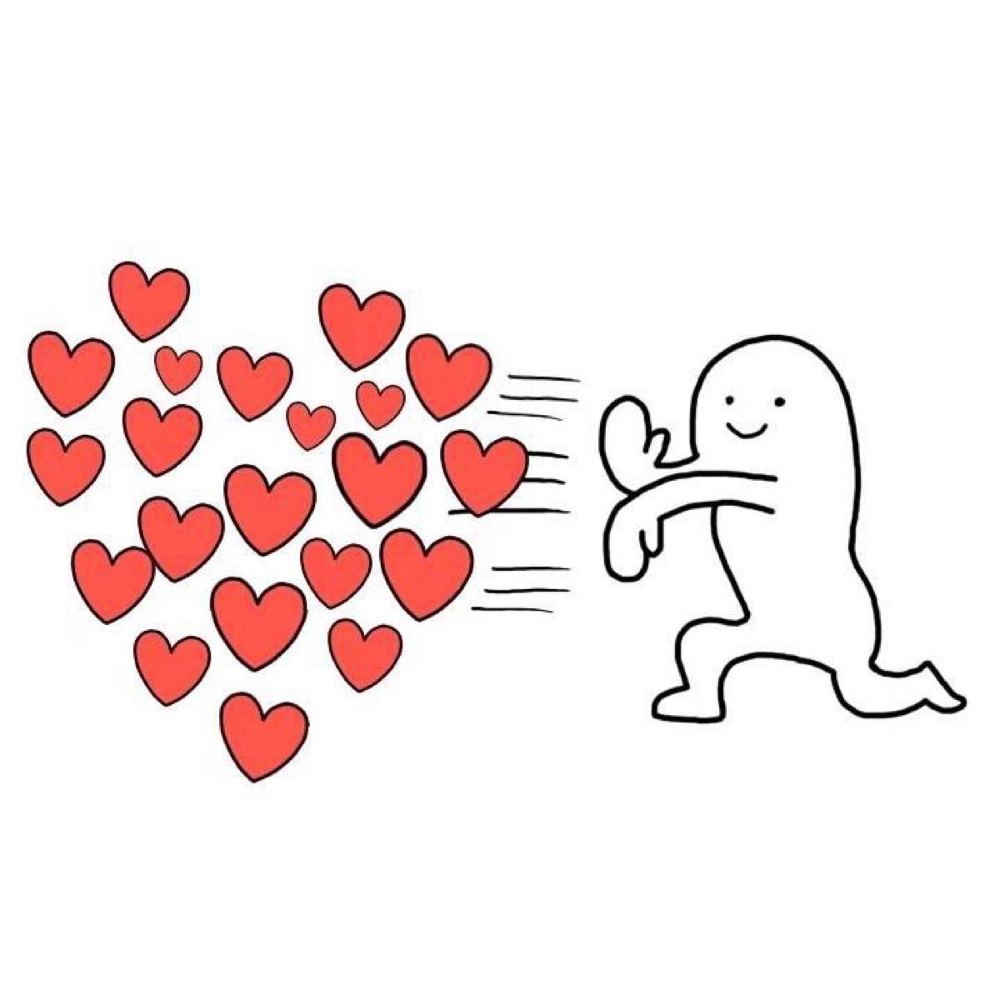

简介：每天更新点小东东，顺便每天学点html来玩玩，最重要的还是tensorflow啦嘻嘻嘻
不知道小小宝贝多久会来看看呢？哈哈哈哈
爱你小宝贝！今天终于有时间来写这个东西啦！（好久没有画画咯，主要是时间比较忙啦！善于发现美的眼睛👀困困哒哈哈哈哈）。我想记录一下昨天晚上的事情。（经过是，小宝贝看到武大外联推送的文章有一个可以免费送鲜花的活动，但是我没有发现，然后猪猪舍友收到了两个人送的鲜花，猪猪感觉不开心咯，然后我就开始激动啦，巴拉巴拉之类的）。其实在睡觉之前，我就知道我今天肯定会记录这个事情，因为我觉得这对我来说的确是一个很重要的，思想拓展吧。我发现，其实人还是偏执和自私的。因为，在正常的情况下，我都会没有任何考虑地就会去想到小宝贝，发现有什么给小宝惊喜呀，开心之类的。但是，一旦碰到了，我也有点情绪（不开心，累，委屈之类的）的时候，人就很容易产生一种“亏”的感觉。从昨晚我的“激动表现”可以看得出来，只有我不断地说什么，我对你多好多好呀之类的。这是第一个我反省的东西。人的确很难在自己被情绪所困扰的时候，还能理性地去对待其他人，包括自己爱的人。（咩宝，不好意思哟，猪猪爱你）。然后第二个事情，可能是因为我的死板或者说一根筋，我觉得我就是想做一个好儿子，好舍友，好男朋友，所以我会要求自己尽可能多地去为别人着想，或者说，我想成为一个“完美”的人，所谓的“拥有强者心态的人”（这是我自己的定义，就是我拥有与强者交流切磋的能力，但是我不会给弱者带来压力的那种）。简单滴说就是，我希望做得最好。对待小宝贝也是一样咯，我想成为一个大家都羡慕哒男朋友哈哈哈哈哈（之前我还给自己定了一个目标呢😂说出来不拍你笑话，我评价自己是不是个好男朋友，就看你舍友怎么评价我的哈哈哈哈（更简单地说是。你舍友羡慕你有这样一个男朋友））哈哈哈哈哈哈，（害羞，我好像挺傻的）哈哈哈哈。哎呀！就是像成为你的唯一嘛（害羞😳）。当然啦，我也想成为那个你欣赏的人咯，虽然还不是嘞，但是还要继续加油芜湖。（跑题啦）哈哈哈哈，其实就是，因为我的这方面的“完美主义”，想呈现一个“完美”男友，所以你发现没有每一次你生气，我都会很激动，因为我感觉自己还是“做得挺好哒”（害羞，小宝贝别打我），然后我发现你因为我不开心啦之类的，我就觉得，啊，我又没有做到，巴拉巴拉的，然后就开始激动啦，巴拉巴拉一大堆。这就是我昨天晚上以后，我想要说的或者说记录的，我虽然写得“形散神也散”，但是，最主要的是，我对我自己的那种认知，有一个新的概念存在里面了，以后我再碰到这类事情的时候，我就知道“有迹可循”咯！小宝，好爱你的呢！昨天最后的时候，你委屈地说，“我也想要嘛，那怎么办，我也不开心，但是又不能骂你“， 我就感觉既开心，又自责，又让小宝贝不开心咯！最后，引用一下扎西朗朗的话，”语言和文字真的是不可执取的东西，当一句话说出来的或者写下来，他就不是你的了，你必须允许别人任意解读，甚至误读。所以我最想说的话，其实在我开口的那一刹那就已经说完“。每一天，每一次更新，我都将我最想说的话，脱口而出。
爱你小宝贝！记录一个有趣的小事情。今天晚上，小宝让我帮她在电脑上登录QQ去发作业给老师。然后，小宝是不想告诉别人她的密码的，所以表达了她的担心，然后我就给她说“那你先改密码，然后登录完了以后，你再改回去呀”。本来是随口一说开玩笑的。没想到小宝真的去改啦。哈哈哈哈哈。小学和初中的时候，关于恋爱，我的认知最多的就是，“男女朋友互相知道各自的QQ密码哦”哈哈哈哈，所以今天第一次碰到这种触及情侣之间关于密码的，然后小宝贝的确让我吃了一惊。哈哈哈哈哈，挺有趣的其实。在我看到小宝贝去改了密码以后，我就有点点不开心啦。不过，最后小宝贝还是太可爱啦！！！！！还要给我唱歌安慰我嘻嘻嘻，真是小天使呢！心都化啦！爱你小宝。世界很奇妙，有幸抓到了一个可爱的小宝贝一起共同探索，嘻嘻嘻！爱你
今天说说绿皮火车吧。小宝在很小的时候，就开始坐绿皮火车啦！相信你有很多的儿时记忆也和绿皮火车有关。我在很小很小的时候
我就记得我也做过绿皮火车去我外婆家，我还记得在绿皮火车上买了一个可以扭来扭去的玩具（蛇）。那个时候还很好玩的感觉。一直到了高考结束，我才重新买上了去重庆的火车票
然后给小宝贝制造遂宁小惊喜哈哈哈哈哈。自此我就真的爱上了绿皮火车。不知道为什么我会这么喜欢绿皮火车。排除比较便宜以外，可能是享受在火车上慢慢溜达过去的慢节奏还有形
形色色的人吧。绿皮火车，不仅承载着底层人民的吃饭的希望， 也是每一对异地恋情侣的向往和爱。哈哈哈哈，可能就是因为绿皮火车里面的满满人情味，才让人如此着迷吧。每一次准备
坐绿皮火车之前，我都会很兴奋，除了坐火车的开心，还有可以去见小宝贝的激动。尤其是这种一点一滴“矿机”过去的，就像一点一点努力，我就离你越来越近。这种感觉真的令人很舒服
和放心，他能见证我为小宝贝作出的每一次努力，火车就是我们的见证者嘻嘻嘻。我知道我在努力，就可以和我的小宝贝在一起，我就会每天都充满积极，开开心心。这可能就是异地恋的
魅力吧。虽然没有，近在咫尺的依靠，但是有永远为你前行的决心。每一次相遇都是不容易的，也是因为这个不容易，让我们更加去珍惜。这种难得，就像在这个快节奏的社会，能够在绿皮
火车上享受慢节奏的舒畅，是一样的！小宝贝，事情的结果取决于你的看法和心态，我爱你，无所谓你在哪里，因为你在哪里，我就会去哪里。有你，有爱，就有🐷耶耶耶（矫情了一下哈哈哈）

爱你小宝贝。终终终终终终终终终终于抢到欢乐谷的票啦！芜湖！第一天我抢到了你没抢到，第二天我帮你抢但是没抢到，第三天我睡觉忘记啦又没抢到，第四天终于被我抢到啦！
芜湖！其实我还是第一次参与抢票的环节哈哈哈，原来在10月31在上海举行的LOL全球总决赛的门票我也去“抢”啦，其实不是抢，他是登记然后抽签，公布的时候我发现我是候补的，
然后过了一下说，不好意思，”你没有获得观赛资格“哈哈哈哈，运气不是很好。不过，该抢到的都抢到啦！还是不错哒，等着去和小宝贝在欢乐谷happy芜湖

爱你小宝贝！要好好学习哦

爱你小宝贝！小宝小宝，我已经到宿舍啦！今天给了我一个大惊喜哦！嘻嘻嘻开心开心。考完试除了开心以外，还想马上拿起手机去看看我的小妞妞在干什么
有没有想我之类滴！没想到一出来就给了我一个大惊喜哈哈哈哈哈！爱你小宝贝。你准备惊喜的时候肯定也很开心哈哈哈哈，因为想看到对方收到你惊喜的时候开心的样子
嘻嘻嘻而且还去安排咯，花时间去找哪个排名高了，哪个好喝啦，还安排好时机，让我一出来就能喝到嘻嘻嘻。太开心啦！小宝，恋爱中这种很细小的细节，真的能够让我们都很感动
哈哈哈小笨蛋都说咯要给请你喝奶茶，你倒请我啦嘻嘻嘻，还让舍友蹭了一杯，不想给他嘻嘻嘻。下次我也要请你们宿舍喝奶茶哦，你什么时候想喝我就出动嘻嘻嘻！今天是个开心开心
开心开心开心的日子嘻嘻嘻

爱你小宝贝。昨天恭喜你呀，获得咯第一，去年以0.01分（？）遗憾输给了法学院，今年好像超过第二名好多好多分呢！小宝贝棒棒哒！昨天，也是LOL全球总决赛的日子，我们中国赛区LPL的SN遗憾1:3败给了韩国赛区LCK的DWG， sn的5个小伙子真的打得很好，虽然留下了遗憾，但是战过，就值啦！我们的人生也是一样的，并不是每个人都会成功，因为只有成功者才会被人记住，但是失败者呢？假设有一天，我们也成为了失败者，也要能做到，败不馁。成功也能做到，胜不骄。方可成就强者心态。芜湖！共勉之小可爱

爱你小宝贝。今天晚上要去跳舞啦💃啦！辛苦了那么久终于可以展示咯，恭喜你呀！我感觉你成长了好多呢，大一的时候，你碰到那种作业和跳舞之间的冲突，你会感觉到烦躁，偶尔会变得比较低沉，但是现在给我感觉你越来越坚强啦！每天都是朝气蓬勃，还要被猪猪气哈哈哈哈哈，但是你还是快快乐乐滴！加油小宝贝，我们一起越变越好哦
爱你小宝贝。昨天你想买鞋鞋，原来我答应帮你买马丁靴滴，但是到了月末再加上我买了去看你的车票，就的确没有什么钱啦😊看你没能买到
有一点不开心的样子，希望你能理解猪猪哦💝
 Issues